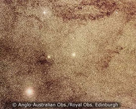

Baade’s Window is one of the few lines-of-sight to the Galactic centre that is not obscured by dust. In this image, the region around the bright globular cluster, NGC6522 (centre), is surrounded by dark lanes of obscuring dust.
Credit: AAO/ROE
Credit: AAO/ROE
Extinction (the obscuration of background objects by intervening dust) towards the Galactic centre is generally very high. Consequently, detailed studies of the central regions of our Galaxy are difficult. Fortunately, there are small patches of sky along the line of sight to the Galactic centre that, by chance, suffer less extinction. One of the largest and most famous of these is Baade’s Window which provides a relatively unobscured view of a region 4 degrees (~2,000 light years) south of the Galactic centre.
Most of our knowledge of the stars in the bulge of the Milky Way is derived from studies in Baade’s Window.